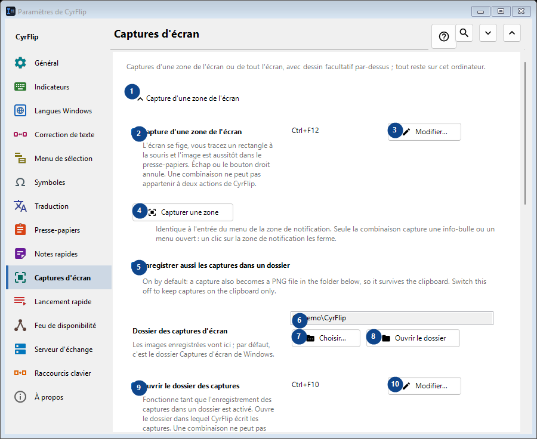
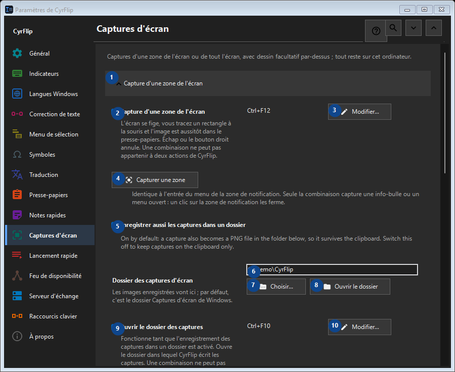

Captures d'écran
À quoi cela sert
Captures d'une zone de l'écran ou de tout l'écran, avec dessin facultatif par-dessus ; tout reste sur cet ordinateur.


Ordre des actions
Les réglages s’appliquent immédiatement. Aucun ordre n’est imposé ; utilisez les groupes ci-dessous.
Éléments
1. Capture d'une zone de l'écran
Utilisez cette commande pour l’action indiquée. Lisez toute confirmation avant de l’accepter.
Vos raccourcis2. Capture d'une zone de l'écran
L'écran se fige, vous tracez un rectangle à la souris et l'image est aussitôt dans le presse-papiers. Échap ou le bouton droit annule. Une combinaison ne peut pas appartenir à deux actions de CyrFlip.
Vos raccourcis3. Modifier - Capture d'une zone de l'écran
Utilisez cette commande pour l’action indiquée. Lisez toute confirmation avant de l’accepter.
Vos raccourcis4. Capturer une zone
Identique à l'entrée du menu de la zone de notification. Seule la combinaison capture une info-bulle ou un menu ouvert : un clic sur la zone de notification les ferme.
Vos raccourcis5. Enregistrer aussi les captures dans un dossier
On by default: a capture also becomes a PNG file in the folder below, so it survives the clipboard. Switch this off to keep captures on the clipboard only.
Vos raccourcis6. Dossier des captures d'écran
Choisissez ou saisissez la valeur indiquée par le libellé voisin. Vérifiez-la avant de continuer.
Vos raccourcis7. Choisir - Dossier des captures d'écran
Utilisez cette commande pour l’action indiquée. Lisez toute confirmation avant de l’accepter.
Vos raccourcis8. Ouvrir le dossier - Dossier des captures d'écran
Utilisez cette commande pour l’action indiquée. Lisez toute confirmation avant de l’accepter.
Vos raccourcis9. Ouvrir le dossier des captures
Fonctionne tant que l'enregistrement des captures dans un dossier est activé. Ouvre le dossier dans lequel CyrFlip écrit les captures. Une combinaison ne peut pas être donnée à deux actions de CyrFlip.
Vos raccourcis10. Modifier - Ouvrir le dossier des captures
Utilisez cette commande pour l’action indiquée. Lisez toute confirmation avant de l’accepter.
Vos raccourcis11. Capture de tout l'écran
Utilisez cette commande pour l’action indiquée. Lisez toute confirmation avant de l’accepter.
Vos raccourcis12. Capture de tout l'écran
Une pression : tous les écrans sont capturés comme une seule image, directement dans le presse-papiers. Rien ne se fige à l'écran.
Vos raccourcis13. Modifier - Capture de tout l'écran
Utilisez cette commande pour l’action indiquée. Lisez toute confirmation avant de l’accepter.
Vos raccourcis14. Capturer tout l'écran
Identique à l'entrée du menu de la zone de notification « Capture de tout l'écran ».
Vos raccourcis15. Dessiner sur les captures
Utilisez cette commande pour l’action indiquée. Lisez toute confirmation avant de l’accepter.
Vos raccourcis16. Dessiner sur les captures
Après la capture, l'image figée reste à l'écran : dessinez des ovales, des rectangles, des lignes et des flèches.
Vos raccourcis17. Capture d'une zone avec dessin
Capture a selected region and draw on it. One chord cannot belong to two CyrFlip actions.
Vos raccourcis18. Modifier - Capture d'une zone avec dessin
Utilisez cette commande pour l’action indiquée. Lisez toute confirmation avant de l’accepter.
Vos raccourcis19. Capture de tout l'écran avec dessin
Capture every display as one picture and draw on it. One chord cannot belong to two CyrFlip actions.
Vos raccourcis20. Modifier - Capture de tout l'écran avec dessin
Utilisez cette commande pour l’action indiquée. Lisez toute confirmation avant de l’accepter.
Vos raccourcis21. Capturer une zone et dessiner
Identique à la combinaison « capture d'une zone avec dessin ».
Vos raccourcis22. Capturer tout l'écran et dessiner
Identique à la combinaison « capture de tout l'écran avec dessin ».
Vos raccourcis